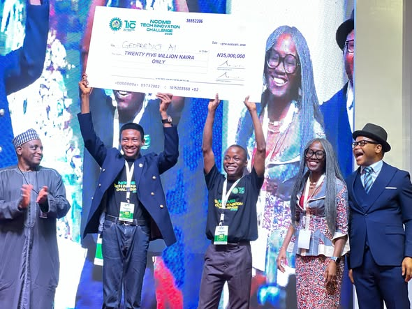

GeoPredict AI
An AI-powered platform analysing seismic, well-log and core data to accelerate reservoir characterisation and drilling decisions. My team placed 1st in the NCDMB Technology Innovation Challenge, 2026.
AI engineer · platform builder · researcher
I help ambitious teams turn AI into reliable products, platforms, and operating leverage. I work across architecture, LLM Ops, evaluation, safety, and delivery.

01 / 05
My work sits at the platform layer beneath AI products: model access, retrieval, evaluation, observability, safety, and developer experience. I care about the paved road - the reliable defaults that let teams move faster without losing quality or control.
02 / 05
An AI-powered platform analysing seismic, well-log and core data to accelerate reservoir characterisation and drilling decisions. My team placed 1st in the NCDMB Technology Innovation Challenge, 2026.
A private, multi-tenant workspace where organisations talk, learn, and grow. I own the AI platform beneath the product: provider routing, workspace-isolated RAG, prompt governance, Sentinel moderation, AI course generation, Tutor, and Care Triage. Selected details are shown with permission while the product remains in stealth.
Retrieval infrastructure rebuilt around evaluation and citations, lifting accuracy from 29% to 96.7% with structured logging, cost tracking, and full test coverage.
Cross-domain ensemble probability fusion for phishing detection, reaching 94.4% accuracy and a 64.3% relative gain over baseline.
Communication intelligence that turns emails and meeting transcripts into structured, decision-ready briefs with an AI-optional, rules-first pipeline.
WORK WITH ME
Turn a stuck AI initiative into a credible build plan, evaluation strategy, and first production milestone.
Discuss a sprint ↗Build the gateway, retrieval, observability, and safety layer your product team can depend on.
Discuss a build ↗Bring senior technical direction to an ambitious team without slowing down delivery.
Discuss a partnership ↗03 / 05
Built automated multi-dimensional evaluation frameworks, agentic code-repair pipelines reaching 85% SWE-Bench success across 200+ issues, and SFT/RLHF data pipelines with researchers.
Own the shared AI platform layer: provider failover, RAG infrastructure reused across five AI surfaces, prompt versioning, generation tracing, observability, moderation, and a support agent resolving ~42% of tickets at ≥0.92 confidence.
Shipped SwarmBench evaluation environments, regression pipelines in GitHub Actions, agentic workflows, and research-intelligence RAG systems with citation tracking.
Architected NLP/CV systems processing 50K+ documents and images monthly, cut inference latency 70%, and mentored 15+ engineers. Staff of the Year ×2.
Production NLP/CV, OCR, anomaly detection, deployment workflows, monitoring, and MLOps foundations across accessibility and predictive systems.
04 / 05
CDEPF framework: 94.4% cross-dataset accuracy through PCA harmonisation and information-theoretic fusion.
05 / 05
Gateways, provider failover, prompt registries, tracing, cost and safety controls.
Grounded retrieval, reranking, citation verification, human-in-the-loop measurement.
FastAPI, NestJS, Docker, CI/CD, monitoring, drift detection, canary deploys.
Architecture, research translation, documentation, and mentorship that compounds.
Let’s talk
Tell me what you are building, where it is stuck, and what success looks like. The usual first step is a focused architecture conversation, then a scoped sprint or platform engagement.
johnsavilesh@gmail.comLinkedIn ↗GitHub ↗